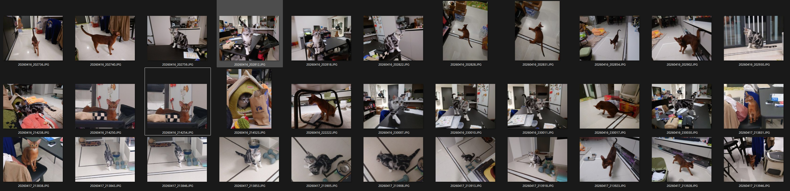
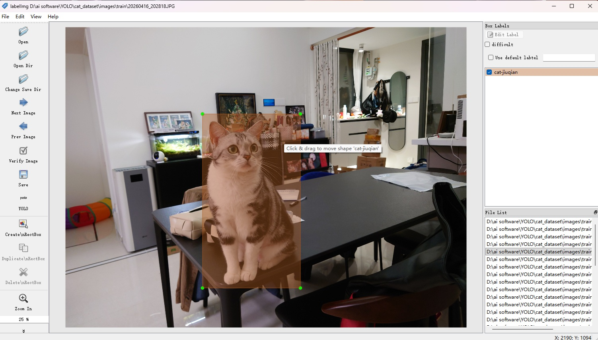
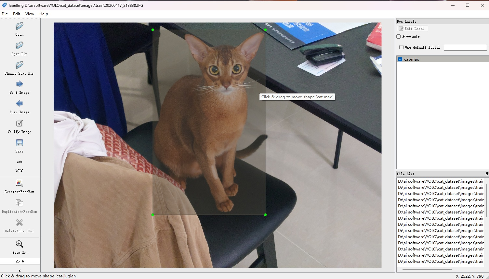
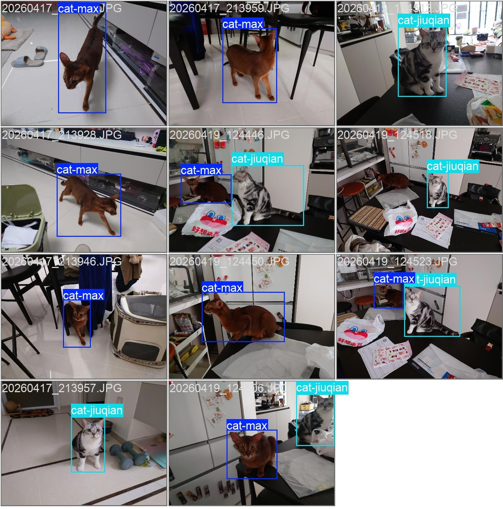
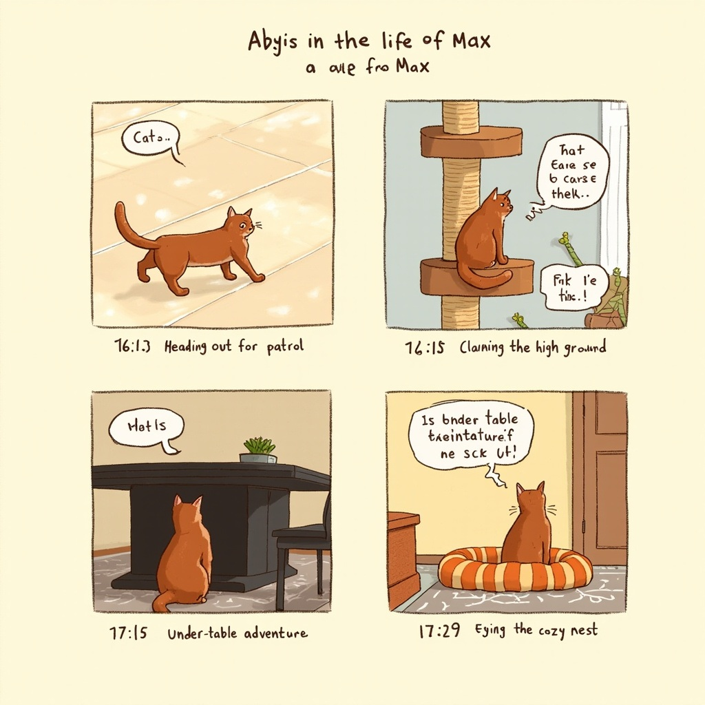
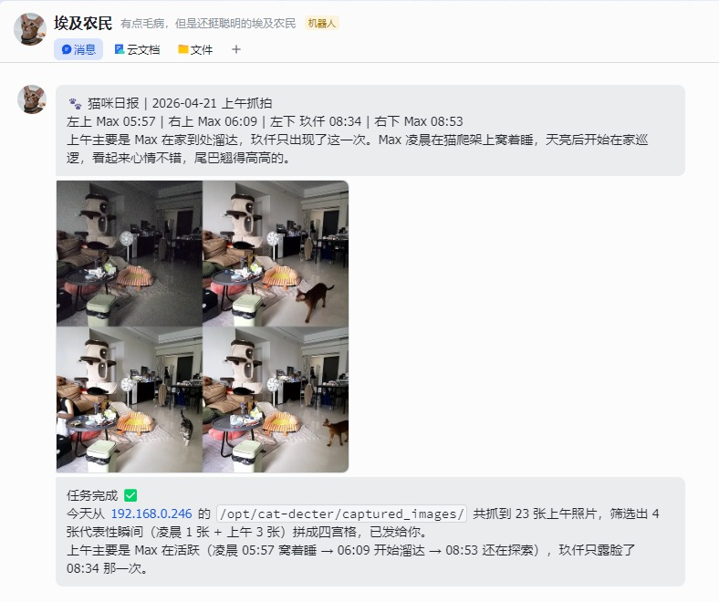

基于YOLO图像识别+AI Agent的猫咪活动识别
设计目标
1-通过YOLO算法识别猫咪，并进行抓拍，再生成猫咪活动事件推送或一天总结；
过程展示
1-对家里两只猫猫进行多角度，多场景的图片收集，虽然理论上每个目标200张以上的照片作为训练集才能出一个较优的模型，但是考虑本身环境稳定不变，家里没有其他目标，所以仅仅只用了45张图片作为第一版的训练素材；

2-通过labelImg进行图像的目标标签绘制，并在电脑上进行第一版的训练；


3-由于数据源较少，开启增强训练，并调整训练轮数避免过拟合的情况；

4-虚拟机接入外置USB摄像头，并部署识别程序，目标出现联动图片抓拍，为防止图片过多，目标出现后不消失，设定抓拍间隔为20s；

5-Agent定时到指定路径下取图片，并对图片内容进行解读，或是对猫咪的一天进行漫画生成，进行推送；

